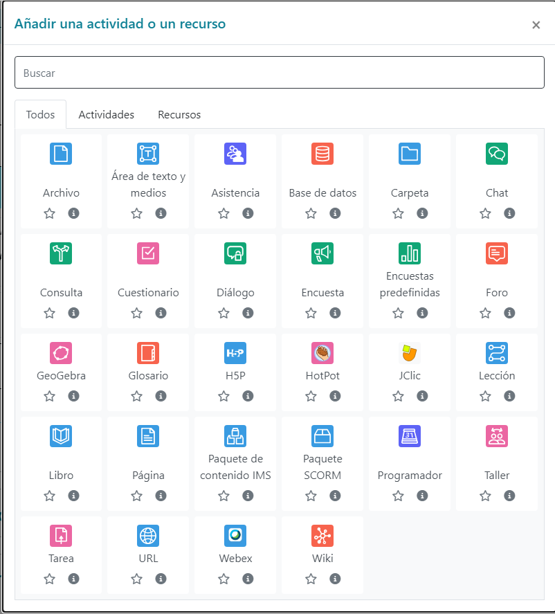

Sistemas de gestión de aprendizaje a distancia:
– Conceptos básicos. Tipos y características.
– Elementos lógicos: comunicación, materiales y actividades.
– Instalación en sistemas operativos libres y propietarios.
– Modos de registro. Interfaz gráfico asociado.
– Personalización del entorno. Navegación y edición.
– Creación de cursos siguiendo especificaciones.
– Gestión de usuarios y grupos.
– Activación de funcionalidades.
– Realización de copias de seguridad y su restauración.
– Realización de informes.
– Elaboración de documentación orientada a la formación de los usuarios.
La educación a distancia ha dado un salto cualitativo y cuantitativo en los últimos años a raíz del espectacular crecimiento en el uso de Internet y la consolidación de los portales web de aprendizaje. Actualmente puede competir en igualdad de condiciones con los sistemas tradicionales de aprendizaje presencial, ofrece más flexibilidad y permite llegar a gente que de otra manera no tendría acceso.
No solamente Internet, sino una nueva dimensión web donde los usuarios colaboran, comparten, participan y crean contenido. Así pues, aquí es donde se enmarcan estos portales de aprendizaje, donde profesores, alumnos y usuarios comparten un espacio común con gran diversidad de recursos para aprender, comunicarse, opinar o trabajar en grupo.
Es, pues, evidente, la importancia de conocer las posibilidades que ofrecen estos entornos para la formación. Aprender a instalarlos, dotarlos de una imagen personalizada, gestionar la seguridad y añadir nuevas funcionalidades, son algunos de los temas que trabajaréis.
En el apartado “Instalación de portales web de aprendizaje” se introduce qué es un portal web de aprendizaje y se describen los componentes que se pueden encontrar, a continuación se habla de las tecnologías implicadas y se explica cómo preparar el entorno y cómo se hace la instalación detalladamente.
En el apartado “Configuración de portales web de aprendizaje” una vez instalado, se detallan las diferentes tareas que hay que hacer para empezar a usar el portal. Esto incluye personalizar el aspecto, implementar las políticas de seguridad adecuadas y preparar los cursos.
En el apartado “Gestión de portales web de aprendizaje” se describen el resto de actividades implicadas en la explotación del portal, la realización de copias de seguridad, la generación de informes y la adición de nuevas funcionalidades; son tareas que de manera asíncrona habrá que hacer para garantizar su correcto funcionamiento y el buen uso.
Esta unidad formativa es eminentemente práctica; para trabajar los contenidos utilizaremos una de las herramientas más populares de enseñanza a distancia, llamada Moodle. Aunque hay otras herramientas, algunas de las cuales se mostrarán, el Moodle es el estándar de facto.
Los entornos virtuales de aprendizaje (EVA), virtual learning environment (VLE) en inglés, son programas específicamente diseñados para facilitar el aprendizaje utilizando sistemas informáticos. La mayoría de ellos trabajan en entornos web, por eso son también llamados portales web de aprendizaje.
Hay muchos entornos virtuales de aprendizaje, algunos de ellos son libres, otros de código abierto y también los hay de privativos. Algunos de estos son:
Aunque sería interesante poder presentar cada uno de estos entornos virtuales, nos centraremos en la plataforma Moodle.
La instalación de un sistema informático requiere un trabajo previo de análisis y evaluación, hay que conocer los requisitos del sistema y destripar entre las múltiples opciones disponibles: el coste, la complejidad o la tecnología que utilizan serán parámetros que habrá que tener en cuenta.
En el caso de los entornos web, aunque son heterogéneos, generalmente utilizan tecnologías similares: el servidor web, la base de datos y los lenguajes dinámicos. Estos son elementos comunes que trabajan para hacerlos funcionar, y hay que entender qué rol tiene cada uno de ellos.
Los entornos virtuales de aprendizaje, llamados habitualmente portales web de aprendizaje, son programas creados para facilitar la enseñanza al mismo tiempo que permiten un aprendizaje más dinámico y flexible que los sistemas tradicionales.
Estos entornos aprovechan las ventajas que ofrecen las tecnologías de la información para permitir la comunicación entre los diferentes agentes implicados en el proceso educativo.
Info
Un entorno virtual de aprendizaje es un software basado en tecnologías web, diseñado para facilitar el proceso de aprendizaje.
Aunque un entorno virtual de aprendizaje puede aplicarse a diferentes ámbitos, lo más habitual es el ámbito educativo, tanto para centros educativos como para cursos de formación. En este sentido, la persona formadora presenta sus materiales, que pueden ser interactivos, en formato digital, y hace el seguimiento de las actividades y lleva el control de la evaluación, al mismo tiempo que está siempre en comunicación con su alumnado. Hay una gran diversidad de recursos disponibles que garantizan un proceso de aprendizaje dinámico, constructivista y ameno.
Por otro lado, el alumnado dispone de múltiples herramientas para comunicarse y colaborar, resolver dudas y trabajar cooperativamente, en general sin limitaciones horarias ni espaciales.
Siguiendo uno de los principios del constructivismo social, se sabe que los seres humanos elaboran conocimiento a partir de la relación social. Aplicando este concepto al mundo de la educación, nos encontramos que el alumnado pasa a participar de forma activa y consciente en el proceso de aprendizaje. En este sentido, las plataformas virtuales de aprendizaje favorecen que se pueda potenciar este aspecto.
La facilidad de uso de estos entornos es una de las claves de su éxito; unos recursos mínimos (un ordenador y una conexión a Internet) y unas habilidades elementales en la utilización de estas herramientas informáticas, garantizan que todo el mundo pueda tener acceso.
Moodle
Moodle es un ejemplo de entorno virtual de aprendizaje. Es un programa de código libre y gratuito, con una comunidad muy amplia de usuarios en todo el mundo. Se basa en el constructivismo social para la adquisición del conocimiento.
Los recursos de los entornos virtuales de aprendizaje son todas aquellas herramientas que permiten a la persona formadora aportar materiales didácticos o bien crearlos para comunicar y complementar el conocimiento a su alumnado.
Estos son los algunos de los recursos que proporciona Moodle y que el profesorado, en modo edición, pueden añadir a sus cursos:
Modo edición
El modo edición es imprescindible para modificar el contenido de los cursos. Al activarlo aparecen un conjunto de iconos asociados a cada ítem del curso y a los bloques, que nos permitirán modificar su colocación y editar los contenidos didácticos. También nos permite añadir nuevos contenidos al curso. Para activarlo o desactivarlo hay que pulsar el botón “Activa edición” o “Desactiva edición”.

Las actividades de los entornos virtuales de aprendizaje permiten al alumnado poner en práctica de manera interactiva los conocimientos adquiridos, comprobar su progreso, consolidar su aprendizaje, participar y trabajar en grupo.
Lenguaje HTML
HTML es el acrónimo de Hyper Text Markup Language, uno de los lenguajes más populares para la creación de páginas web.
El alumnado participa generando y entregando documentos, respondiendo a preguntas, añadiendo contenido o incluso dando su opinión.
Las personas formadoras crean actividades dirigidas al alumnado y pueden recibir el resultado para evaluarles y hacerles un seguimiento.
Hay una gran variedad de actividades diferentes. Pueden ser de dos tipos: individuales y colaborativas.
Algunos ejemplos de actividades individuales son:
Una pregunta con respuesta numérica espera que el estudiante introduzca un número permitiendo un margen de error. Se habilita un rango de posibles respuestas acertadas. Por ejemplo, si la respuesta correcta es 50 con un margen de error de 5, será correcto cualquier número entre 45 y 55.
Algunos ejemplos de actividades colaborativas son:
La palabra SCORM...
… es un acrónimo de Shareable Content Object Reference Model (modelo de referencia de objetos compartibles de contenido). Es un formato estándar consensuado de objetos de aprendizaje.
Un rol es una colección de permisos definida para todo el sistema que podéis asignar a los usuarios en contextos específicos. La combinación de rol y contexto define las acciones que el usuario puede hacer en las páginas. Tratándose de un entorno de aprendizaje, los roles más comunes que ofrece Moodle son el de profesor/a y estudiante además del de administrador/a para gestionar el portal.
Las herramientas de comunicación en los portales web de aprendizaje son un elemento básico en el proceso de aprendizaje; la comunicación con el profesorado, las dudas que aclaran los/as compañeros/as o las discusiones y el debate son necesarios y ayudan al alumnado.
Las herramientas de comunicación de los portales web de aprendizaje son todas aquellas que permiten a los agentes que intervienen comunicarse entre ellos. La comunicación puede ser en directo o en diferido.
Estas son algunas de las herramientas existentes para la comunicación de los portales web de aprendizaje:
Antes de instalar cualquier software hay que hacer una tarea previa de comprobación; hay que determinar si el sistema cumple todos los requisitos y tiene todo lo necesario.
En este sentido Moodle es un software que trabaja sobre un entorno web dinámico y con una base de datos; concretamente está escrito en lenguaje PHP y en general se utiliza una base de datos MySQL, y por tanto hay que preparar este entorno antes de empezar a instalarlo.
Para entender la diferencia entre páginas web estáticas y dinámicas hay que preguntarse cuál es el rol del usuario/a. En una página web estática el/la usuario/a es un simple espectador, puede leer documentos, ver imágenes u otros contenidos multimedia: este era el uso clásico de la web. En cambio, en un entorno dinámico se puede crear el contenido, se puede añadir un comentario, por ejemplo en un foro o en una wiki, se puede subir un documento y compartirlo —una imagen o un vídeo—, se puede crear un blog para explicar un viaje donde otras personas usuarias pueden dar su opinión. Internet está lleno de ejemplos: Youtube (vídeos), Flickr o Picasa (fotografías) o Blogger (bitácoras) son algunos.
Apache, PHP, MySQL
Las tecnologías que se utilizan para crear entornos web dinámicos son el servidor web Apache, el lenguaje de programación PHP y la base de datos MySQL. Estas tecnologías son muy utilizadas conjuntamente en Internet para crear infraestructuras de servidores web; son gratuitas y de código abierto.
De aquí se desprende por una parte la necesidad de una base de datos donde se registra e interrelaciona toda esta información que aportan los/as usuarios/as, y por otra la necesidad de un lenguaje que permita mostrar este contenido dinámico. Imaginad un álbum de fotografías en la web: un día puede tener una fotografía, al día siguiente puede tener 10, y al otro puede tener 30; con un lenguaje estático habría que modificar la página cada vez, haría falta un programador web y los cambios no serían inmediatos.
A parte, es necesario un tercer elemento, el servidor web, que podéis entender desde dos puntos de vista diferentes: por una parte es el ordenador que acepta las peticiones de los navegadores web de los clientes y les devuelve los documentos que muestran, y por otra es el software que gestiona esta funcionalidad.
Info
Hay tres elementos principales que hay que preparar antes de empezar a instalar Moodle: el servidor web, la extensión para el lenguaje dinámico y la base de datos. El servidor web, la extensión para el lenguaje dinámico y la base de datos se pueden instalar por separado y configurarlos, pero hay herramientas disponibles que facilitan esta tarea y están disponibles para cualquier sistema operativo.
En la web www.apachefriends.org podéis descargar el XAMPP para Linux y Windows con información detallada sobre el proceso de instalación.
Finalmente también hay que asegurarse de que los futuras personas usuarias del portal web tengan acceso. Por ejemplo, si solo son usuarios/as de una red local se puede instalar en uno de los ordenadores de la red, pero si queréis que las personas usuarias tengan acceso a la aplicación desde Internet hay que asegurarse de que el ordenador donde se instala es accesible desde la web o bien utilizar un servidor preparado de algún proveedor de alojamiento de webs.
Para hacer la instalación de un portal web de aprendizaje hay que seguir los pasos siguientes:
Este es un procedimiento general para cualquier portal de aprendizaje o incluso para cualquier aplicación que funcione con tecnologías similares; como ejemplo se describen los pasos para instalar el Moodle (podéis obtener información más detallada en la página oficial del Moodle).
Actualizar a MariaBD a la última versión
Descarga la última versión de MariaDB en formato zip.
Renombra xampp/mysql a xampp/mysql-old
Descomprime la nueva versión en xampp/mysql
Copia xampp/mysql_old/bin/my.ini a xampp/mysql/bin/my.ini
Copia carpeta xampp/mysql_old/backup a xampp/mysql/backup
Copia SOLO las carpetas (no archivos) de xampp/mysql_old/backup a xampp/mysql/data
Cambiar parámetros en el fichero php.ini
Desde este fichero podemos cambiar parametros como:
post_max_size = 500M
upload_max_filesize = 500M
max_input_vars = 10000
O descomentar las siguientes líneas para activar las extensiones necesarias:
extension=gd
extension=gmp
extension=intl
extension=imap
extension=soap
extension=sodium
extension=tidy
extension=zip
O copiar el archivo xampp/php/libsodium.dll a xampp/apache/bin/libsodium.dll
Descargar la última versión del portal de aprendizaje Moodle correspondiente a la plataforma. Hay varias opciones para descargar el software. Más información en https://download.moodle.org/releases/latest/. Os recomiendo bajarla en zip.
Descomprimir y copiar los ficheros a la raíz del servidor web. Una vez bajado el paquete con los ficheros, hay que localizar la carpeta raíz del servidor web, aquella que gestiona el servidor. En los sistemas operativos Linux la carpeta raíz por defecto es /var/www. En Xampp, por ejemplo, la carpeta raíz es la carpeta htdocs.
Crear una base de datos vacía. Antes de continuar con la instalación hay que crear una nueva base de datos y un usuario que tenga acceso con unos determinados privilegios. Hay diversas formas de hacerlo en Xampp, por ejemplo, se puede hacer desde la consola del MySQL o bien con la herramienta phpMyAdmin, que es una aplicación web para administrar la base de datos y que se instala con la mayoría de paquetes.
También se puede utilizar MySQL Workbench, una herramienta gráfica muy utilizada en la administración de bases de datos. Podéis encontrar más información en la página oficial de MySQL Workbench.
Por defecto el MySQL crea el superusuario root con todos los permisos; está totalmente desaconsejado hacerlo servir en entornos productivos, y hay que crear uno nuevo. Si usamos el usuario root para nuestras pruebas en local, debes cambiar la contraseña del usuario root. Para ello, desde la consola de MySQL, ejecuta la siguiente sentencia:
ALTER USER 'root'@'::1' IDENTIFIED BY 'moodle';
ALTER USER 'root'@'127.0.0.1' IDENTIFIED BY 'moodle';
ALTER USER 'root'@'localhost' IDENTIFIED BY 'moodle';
En este caso le hemos puesto contraseña moodle.
Debemos cambiar la contraseña en el fichero config.inc.php:
$cfg['Servers'][$i]['password'] = 'moodle';
Crear el directorio para las datos (moodledata). Moodle requiere un directorio donde almacenar todos sus ficheros.
Documentar la instalación. Anotar los parámetros de configuración y la información más relevante. Hay que hacer un apunte: en todo proceso de instalación o mantenimiento informático o de carácter general será necesario documentar las tareas hechas y los parámetros establecidos. Ahora es un buen momento para empezar la documentación de esta instalación. Crear un nuevo documento e indicar el árbol de directorios del servidor web (por ejemplo, http://localhost/moodle y la base de datos MySQL en http://localhost/phpMyAdmin) y el usuario y contraseña de acceso a la base de datos.
Iniciar el programa instalador que os irá guiando y seguir las instrucciones cuidadosamente, corrigiendo los posibles errores que vayan surgiendo. En primer lugar hay que escoger el idioma de la instalación.
A continuación se hace una primera comprobación de la configuración PHP. Si hay algún mensaje de error en este punto, hay que revisar los parámetros de configuración del PHP o acceder a la página oficial del PHP para obtener más información: http://www.php.net.
En el siguiente paso el instalador verifica que existe el directorio moodledata y que tiene los permisos de escritura y lectura adecuados. Este directorio contiene los datos que se generan a raíz del uso del portal, documentos de los usuarios, imágenes, etc. En caso de error lo podéis crear vosotros mismos, preferentemente en la ubicación que os indica el instalador.
Después de hacer cualquier modificación en la configuración de los servicios hay que reiniciarlos para que los cambios tengan efecto.
A continuación se os pide que confirméis el controlador de la base de datos. Utilizaremos MariaDB (nativo/mariadb).
Después se muestra la configuración de la base de datos y el usuario que tiene acceso, aquí hay que indicar el usuario utilizado con anterioridad. Si estamos en local el servidor es localhost, si estamos en un servidor remoto hay que indicar la dirección IP o el nombre del servidor.
Todo y que en el ejemplo estáis utilizando una base de datos MySQLo MariaDB hay que tener en cuenta que se pueden utilizar otros gestores de bases de datos como por ejemplo Oracle, SQLServer o PostgreSQL.
La instalación de Moodle también valida algunas extensiones del PHP necesarias para el funcionamiento correcto de la aplicación. No son imprescindibles pero es un buen ejercicio activar o habilitar las extensiones que solucionan algún problema.
Durante la instalación también podréis añadir el idioma seleccionado al principio del proceso, aunque desde la aplicación en funcionamiento en cualquier momento se pueden añadir nuevos paquetes de idioma.
El proceso continúa con la creación de las tablas en la base de datos, y finalmente el resultado de la instalación es la base de datos con las tablas inicializadas y el fichero config.php, donde se encuentra la configuración del sistema.
En cualquier momento se puede volver a iniciar la instalación de Moodle borrando el fichero config.php y abriendo la carpeta raíz de Moodle con un navegador web.
El proceso de instalación finaliza y si todo ha sido correcto podéis visualizar la página de inicio del portal.
Un ejemplo del contenido del archivo config.php al finalizar el proceso de instalación de Moodle (documentad, añadid el archivo de configuración a la documentación de la instalación) es el siguiente:
<?php // Moodle configuration file
unset($CFG);
global $CFG;
$CFG = new stdClass();
$CFG->dbtype = 'mysqli';
$CFG->dblibrary = 'native';
$CFG->dbhost = 'localhost';
$CFG->dbname = 'moodle';
$CFG->dbuser = 'moodleuser';
$CFG->dbpass = 'moodleuser';
$CFG->prefix = 'mdl_';
$CFG->dboptions = array (
'dbpersist' => 0,
'dbport' => 3306,
'dbsocket' => '',
);
$CFG->wwwroot = 'http://localhost/moodle';
$CFG->dataroot = '/var/www/moodledata';
$CFG->admin = 'admin';
$CFG->directorypermissions = 0777;
require_once(dirname(__FILE__) . '/lib/setup.php');
// There is no php closing tag in this file,
// it is intentional because it prevents trailing whitespace problems!
Se generan una gran cantidad de tablas durante la instalación, pero no hace falta preocuparse mucho, ya que en general no hace falta hacer ninguna acción directamente sobre la base de datos.
https://moodle.org/mod/forum/discuss.php?d=329891
Si no se instala en español, se puede instalar desde el area de administración de Moodle.
Abans de posar en marxa un sistema informàtic, cal configurar-lo, i depenent de la complexitat que tingui serà una tasca més o menys feixuga.
Tot i que la majoria dels portals web d’aprenentatge tenen característiques comunes i, en particular, el Moodle té una interfície estàndard que el caracteritza, és molt important conèixer a quin tipus d’organització va dirigit per tal de realitzar la configuració ‘a mida’ de l’entorn (idioma, tipus d’activitats, recursos, etc.).
En un portal web, per exemple, s’ha de personalitzar l’aspecte. És important que l’entorn tingui una estètica adient amb la resta d’aplicacions de l’organització en què es vol integrar; per exemple, cal posar-hi el logotip o utilitzar els colors apropiats.
D’altra banda, és un sistema multiusuari, en què hi ha usuaris amb necessitats i interessos diferents i per tant també cal establir mecanismes de seguretat. Afortunadament, algunes d’aquestes tasques es poden automatitzar i per tant estalviar molt de temps i esforç.
A més, poden ser necessàries altres tasques més específiques. Concretament els portals web d’aprenentatge requereixen la creació i configuració dels cursos. Els cursos són la base dels portals web d’aprenentatge, reuneixen alumnes, professors i recursos entorn d’una matèria per col·laborar i compartir en el procés d’aprenentatge.
Personalització de l'entorn
L’aspecte d’una aplicació marcarà la primera impressió dels futurs usuaris; per tant, cal cuidar-lo i personalitzar-lo, i és important que sigui agradable i que tingui els elements necessaris que el relacionin amb l’organització que representa. Per exemple, el logotip ha d’estar ben visible a la capçalera.
La majoria de portals web d’aprenentatge també permeten modificar l’idioma, i fins i tot donen l’opció als usuaris per seleccionar-lo. Haureu d’analitzar a qui està dirigit el vostre portal i en funció d’això carregar els idiomes corresponents. Tampoc no té gaire sentit carregar tots els idiomes disponibles si només tindreu usuaris catalans, per exemple: en aquest cas amb el català, castellà i anglès n’hi hauria prou.
Tot i que la gestió d’usuaris és una acció típica d’administració del portal, es presenta i s’explica en aquest apartat de configuració, ja que calen determinats conceptes per entendre millor la configuració dels cursos.
La pàgina d'inici
La primera pàgina o pàgina d’inici és aquella que es mostrarà a l’usuari abans o després d’entrar al portal.
Habitualment la pàgina d’inici conté el nom del portal a la capçalera, un calendari i la llista de categories amb els cursos disponibles. També hi ha un enllaç que permet entrar als usuaris que ja estan registrats o accedir com a visitant sense necessitat de registrar-se.
Els visitants tenen privilegis limitats i només tenen accés a la informació que l’administrador i els creadors dels cursos decideixen. En alguns casos, per exemple, pot interessar restringir l’accés als cursos als usuaris registrats i evitar que visitants i curiosos accedeixin a la informació del portal.
El contingut de la primera plana es pot modificar. Podeu afegir una breu descripció del portal, mostrar notícies, mostrar les categories dels cursos limitant-ne la quantitat que es visualitza.
Per posar la pàgina de registre com a pàgina d’inici, cal activar l’opció que obliga els usuaris a entrar (forcelogin). Es configura a l’ítem Administració del lloc/Seguretat/Normativa del lloc del bloc de Configuració.
El contingut de la primera plana es configura a l’ítem Administració del lloc/Primera plana/Paràmetres de la primera plana del bloc de Configuració.
La pàgina de cada usuari
La pàgina de cada usuari o Home page en anglès és la pàgina que cada usuari veu quan accedeix als seus cursos.
Habitualment conté el bloc central amb els cursos als quals està inscrit o bé la jerarquia de categories; el bloc de Navegació amb l’accés als diferents cursos; i el bloc d’Administració on pot editar el seu perfil i altres accions segons el rol de l’usuari. Altres blocs poden aparèixer en funció de la configuració realitzada per l’administrador.
L’administrador pot configurar aquesta pàgina per a tots els usuaris. Habitualment apareixen els cursos als quals estan inscrits en el bloc central, el bloc de navegació, el bloc de configuració i altres elements com ara avisos dels missatges al fòrum no llegits o tasques pendents de lliurar.
Aquesta pàgina també pot ser configurable per cada usuari mitjançant el botó Personalitza aquesta pàgina. En cas que ho necessiti, també pot tornar a la pàgina per defecte imposada per l’administrador del portal.
Perfils
El perfil d’usuari és la informació emmagatzemada de tot usuari autenticat al portal Moodle.
És una col·lecció de camps agrupats per categories, com ara dades generals, imatge, interessos i altres dades. Alguns camps són obligatoris i per tant l’usuari els ha d’introduir en el moment d’autenticar-se. L’administrador pot decidir l’obligatorietat o opcionalitat dels camps i a més indicar quins seran visibles per la resta d’usuaris.
Tot usuari pot configurar el seu perfil anant a Configuració del meu perfil/Edita el perfil del bloc de Configuració (figura.1).
L’administrador pot afegir nous camps al perfil anant a Administració del lloc/Usuaris/Comptes/Camps del perfil d’usuari. També pot bloquejar determinades dades del perfil per imposar un valor i que l’usuari no pugui modificar-lo. Cal anar a Administració del lloc/Connectors/Autenticació/ Autenticació basada en el correu electrònic.
FiguraEdició del perfil
És molt important que l’administrador revisi la Normativa del lloc per establir l’obligatorietat a autenticar-se per visualitzar els cursos, els perfils dels usuaris i les seves imatges, a més d’altres paràmetres relacionats amb la protecció de dades com quins rols seran visibles. Cal anar a Administració del lloc/Seguretat/Normativa del lloc.
Blocs
Qualsevol pàgina del Moodle està organitzada per blocs. Un bloc no és més que un conjunt d’informacions i enllaços a accions agrupades en un requadre.
Els blocs fonamentals del Moodle són el de Navegació, Configuració i el bloc Principal on posarem el contingut del curs.
Moodle disposa d’altres blocs addicionals que ens permeten accedir a altres informacions. L’administrador configura quins blocs veurà cada usuari i en quina disposició apareixeran a les pàgines indicant també sota quin context.
Com a professors podem gestionar l’estructura de blocs dels cursos que administrem, tant per afegir o treure com fer una nova disposició. La capacitat que tenim com a professors depèn del tema utilitzat en el portal i de la configuració feta per l’administrador que pot fixar la presència de determinats blocs. Els estudiants en canvi no poden afegir-ne ni esborrar-ne però poden amagar-los.
Els blocs ens proporcionen informació addicional al contingut del curs que poden ser de gran utilitat en el procés d’aprenentatge. Més endavant s’explora més a fons els continguts dels diferents blocs.
L’administrador de curs o professor gestiona l’estructura de blocs activant l’edició i anant al bloc Afegeix un bloc.
Moodle s’ha adequat a l’increment de l’ús de tauletes (tablets) i altres dispositius mòbils i per tant les seves pàgines són responsive adaptant-se a les diferents mides de les pantalles fent que els diferents blocs laterals surtin al final de la pàgina.
L’administrador gestiona els blocs instal·lats i els configura anant a Administració del lloc/Connectors/Blocs/Gestió de blocs del bloc de Configuració (figura.2).
FiguraConfiguració dels blocs
Temes
Dins el paquet estàndard del Moodle s’inclouen alguns temes per defecte. Un tema defineix l’aparença de tot el portal, però cada curs o usuari també pot tenir el seu tema propi.
És possible previsualitzar un tema abans d’activar-lo i veure quin aspecte tindrà el portal si finalment el seleccioneu.
Els temes estan disponibles a l’ítem Administració del lloc/Aparença/Temes del bloc de Configuració.
Des del menú d’administrador es pot configurar l’aparença del portal i, per exemple, escollir un tema que li doni un aspecte personalitzat.
A més de canviar l’aspecte del portal es poden establir els paràmetres del tema per gestionar fins a quin punt els usuaris poden modificar i personalitzar l’aspecte del portal, per exemple:
Limitar la llista de temes que els usuaris podran escollir.
Permetre que cada usuari seleccioni el seu tema propi, que s’aplicarà una vegada entri al sistema.
Permetre definir temes particulars per als cursos.
Gestionar els blocs del lloc; per exemple, ocultar-ne o afegir-ne als cursos.
Cal adonar-se que si com a administradors permeteu la selecció de temes per usuari i curs, el sistema ha de decidir en cada moment quin tema ha de mostrar. Els temes s’apliquen segons el seu àmbit: de lloc, que tria l’administrador i s’aplica a tot el portal; d’usuari, escollit per l’usuari; i de curs, que defineix l’administrador del curs. Les prioritats de més a menys prioritari són curs, usuari i lloc. En cas de conflicte s’aplica el tema de l’àmbit més prioritari.
L’administrador pot configurar l’aparença del portal atorgant als usuaris un determinat grau de llibertat per personalitzar els seus cursos; des de més aspectes a detallar fins a un portal homogeni amb la mateixa aparença per a tothom.
A part dels temes predefinits en el paquet estàndard del Moodle, n’hi ha molts altres que desenvolupa la sempre activa comunitat Moodle. Aquests s’ofereixen gratuïtament sota llicència http://ca.wikipedia.org/wiki/GPL.
Es poden baixar nous temes des del web https://moodle.org/plugins/browse. php?list=category&id=3.
En general els temes estan comprimits en format ZIP. Per instal·lar un nou tema cal descomprimir el fitxer i pujar el contingut al servidor web, a la carpeta theme de Moodle, dins una nova carpeta amb el nom del tema.
cd /var/www/html/moodle/theme
sudo unzip /
En la figura.3 es pot veure el portal després de seleccionar el nou tema.
FiguraPortal amb el tema ‘contemporary’
Per crear temes propis, són necessaris coneixements d’algunes tecnologies com ara els fulls d’estil en cascada (CSS) o els llenguatges de marques (XHTML), a més d’estar familiaritzat amb el desenvolupament de pàgines web.
Idioma
El portal web Moodle permet afegir nous idiomes i per tant configurar l’entorn amb el que ens interessi. Aquesta tasca es realitza com a administrador. A més, cada usuari pot escollir el seu idioma preferit editant el seu perfil.
Per treballar amb fulls d’estil i disseny web hi ha una eina molt útil per al navegador Firefox anomenada Firebug. Permet veure mentre es navega el codi de les pàgines, els atributs i els estils que s’apliquen a cada element; a més els estils es poden editar, modificar i veure’n el resultat directament al navegador
Per gestionar els paquets d’idioma cal entrar com a administrador. Des d’Administració del lloc/Idioma/Paquets d’idioma del bloc de Configuració, teniu accés a la instal·lació, actualització i desinstal·lació de tots els idiomes disponibles (figura.4).
FiguraInstal·lació d’un nou paquet d’idioma
També es pot instal·lar manualment. Des del menú de descàrregues del web del Moodle (https://download.moodle.org/langpack/2.8/) us podeu baixar els diferents idiomes (format ZIP). Observareu que està traduït a molts idiomes, la qual cosa us pot donar una idea de la difusió que té.
Només cal que descomprimiu el contingut del fitxer al directori moodledata, dins una carpeta anomenada lang, que caldrà crear en cas que no existeixi.
Per configurar l’idioma de l’entorn podeu accedir als paràmetres d’idioma dins del d’Administració del lloc/Idioma/Paràmetres d’idioma del bloc de Configuració.
Altres aspectes: capçalera, peus de pàgina, logo...
Segons el tema que tenim activat podem gestionar la capçalera i el peu de les pàgines anant al seu menú de configuració o bé a la seva pàgina de configuració. Allà podeu afegir el logo de l’organització, cosa que és recomanable ja que es tracta d’una informació imprescindible que identifica la institució o empresa (figura.5).
FiguraAfegir un logotip
Una altra manera per afegir una capçalera i un peu de pàgina és modificant directament el codi HTML. L’administrador del portal pot afegir codi HTML addicional a cada pàgina anant a Administració del lloc/Aparença/HTML Complementari del bloc de Configuració.
Gestió d'usuaris. Autenticació
Els usuaris i els cursos són els pilars del portal. Són, en definitiva, els qui treballaran amb el portal, tant si són professors com alumnes, visitants o bé administradors. Es poden integrar uns usuaris existents a una organització, crear-ne de nous manualment o bé obrir el sistema per tal que ells mateixos introdueixin les seves dades.
L’entorn ofereix molta flexibilitat: es pot parametritzar un sistema rígid de verificació d’usuaris i mantenir-ne un control estricte o bé deixar-lo més obert i automatitzar els processos relaxant el nivell de control i la càrrega de feina dels administradors.
També hi ha algunes funcionalitats que permeten la càrrega massiva de dades i personalitzar els perfils d’usuari per ajustar-se als requisits de qualsevol entorn educatiu o empresarial.
Autenticació
Una de les primeres tasques que heu de fer com a administradors és habilitar el registre dels usuaris, tant professors com alumnes, al vostre portal. Haureu de valorar quins són els mètodes d’autenticació que us permeten fer una gestió més efectiva del vostre col·lectiu. És possible que per a diferents perfils d’usuaris habiliteu mètodes d’autenticació diferents. No cal establir per tant un mètode únic d’autenticació.
Es defineix l’autenticació com l’acte d’establir o confirmar que quelcom o algú és autèntic i, per tant, el permetrà entrar en un lloc o sistema. Es tracta de comprovar la veracitat, i en el cas d’un usuari verificar-ne la identitat per mitjà d’un certificat digital o responent el correu.
En el Moodle l’autenticació consisteix a definir de quina manera es registren els nous usuaris al sistema, quina informació aporten i si es verifica amb algun servidor extern.
Moodle ofereix diferents sistemes d’autenticació que es poden configurar i adaptar a una organització concreta. Bàsicament es poden diferenciar dues situacions depenent de si els usuaris ja són en algun altre sistema i podem accedir a les seves dades, o bé encara no existeixen i cal introduir-hi les dades. A la figura.6 es pot veure el menú de configuració.
Hi ha connectors que permeten validar els usuaris directament contra una base de dades externa en format Access, Oracle o MySQL. També hi ha disponibles connectors amb servidors externs de tipus LDAP (Active Directory, de la família Windows Server), POP3 (servei de correu), RADIUS (servei específic d’autenticació en xarxa), IMAP (Internet Message Access Protocol), FirstClass, NNTP (Network News Transport Protocol) i altres. També es poden utilitzar els comptes ja creats en el sistema operatiu que alberga el Moodle mitjançant el PAM (Pluggable Authentication Modules).
Una altra opció és integrar el Moodle dins el Moodle en xarxa mitjançant el Moodle Network Authentication. Això permet als usuaris d’altres portals d’aprenentatge integrats a la Xarxa entrar al portal utilitzant les mateixes dades.
En qualsevol cas, caldrà parlar amb l’administrador de sistemes de l’organització per coordinar la comunicació entre el portal i els sistemes d’autenticació existents.
Entrada manual d’usuaris per part de l’administrador: sempre està disponible. Això aporta més control sobre qui té accés al sistema però implica un volum important de feina per part dels administradors.
L’autenticació basada en el correu electrònic: els usuaris introdueixen les seves dades i el sistema els envia un missatge de correu perquè les confirmin; evidentment és un sistema més àgil però ofereix menys control, ja que qualsevol persona pot registrar-se mentre indiqui una adreça de correu correcta.
Sense autenticació: els usuaris poden crear comptes directament vàlids sense cap mena de validació; evidentment aquesta opció està totalment desaconsellada.
FiguraMenú configuració de mètodes autenticació
Un paràmetre interessant que cal tenir en compte per evitar la intrusió de robots o programes automàtics de registre és activar el CAPTCHA. Es tracta d’un element visual que s’afegeix al registre, i mostra unes lletres normalment distorsionades, que l’usuari pot identificar però els sistemes de reconeixement de text automàtic no. En la figura.7 es pot veure un exemple de CAPTCHA.
FiguraExemple de CAPTCHA
Pot habilitar-se més d’un connector per a l’autenticació. En aquest cas, el primer connector que resolgui positivament el login i contrasenya introduïts per l’usuari en validarà l’entrada al portal.
La configuració de l’autenticació es fa des d’Administració del lloc/Connectors/Autenticació/ Gestió de l’Autenticació del bloc de Configuració.
Altres paràmetres que es poden configurar són:
Habilitar l’autoregistre dels usuaris a través del correu electrònic.
Habilitar l’accés com a visitant.
Admetre o denegar dominis de correus. Pot interessar per exemple denegar adreces de Hotmail, Yahoo o altres dominis.
Activar el CAPTCHA.
Habilitar unes instruccions personalitzades en lloc de les proporcionades per defecte.
Gestió de seguretat. Rols
En qualsevol sistema informàtic multiusuari cal establir unes normes de seguretat que garanteixin que cada usuari només pot fer allò que se li permet. A més, és necessari que hi hagi diferents tipus d’usuaris, uns amb més privilegis que altres segons les seves funcions i responsabilitats.
Això esdevé normatiu i, per tant, obligatori, si el sistema tracta amb dades personals i privades dels usuaris. És molt important conèixer la llei de protecció de dades del teu país. En el cas de l’estat espanyol la norma jurídica s’anomena Ley Orgánica de Protección de Datos (LOPD).
Seguretat del lloc
La seguretat del lloc permet definir alguns paràmetres per protegir el portal de l’exterior; els valors per defecte ofereixen prou seguretat. Alguns dels apartats són:
Blocatge d’IP: per denegar i permetre l’accés a determinades adreces IP o grups d’adreces.
Normativa del lloc: permet modificar alguns paràmetres com ara obligar a entrar els usuaris per visualitzar els cursos i els perfils, les dades dels usuaris que poden ser visibles, la mida màxima dels fitxers que es poden pujar, la quota d’usuari, si es permet que Google entri com a visitant, i molts altres paràmetres referents a la seguretat del lloc.
Seguretat HTTP: permet activar o desactivar paràmetres referents a la navegació (HTTPS, galetes, etc.).
Respecte a la seguretat Moodle proporciona les següents recomanacions:
A la configuració de la seguretat s’accedeix des d’Administració del lloc/Seguretat del bloc de Configuració.
Obligar l’entrada dels usuaris per veure els cursos i els perfils.
Utilitzar claus d’inscripció per visualitzar el contingut i participar en els cursos.
Ocultar informació dels perfils dels usuaris.
Activar política de contrasenyes segures: quins caràcters, longitud, etc.
Desactivar l’entrada dels visitants.
Posar contrasenya a l’usuari administrador (root) de la base de dades.
A més, també es pot fer funcionar el Moodle sota el protocol HTTPS, més segur, encara que cal preparar el servidor web per treballar amb aquest protocol. Cal tenir en compte, però, que tot i que proporciona més seguretat també alenteix el servei i, per tant, cal que n’estigui justificat l’ús.
Rols
Per rol s’entén un conjunt de permisos i prohibicions agrupats sota un nom. Els rols s’assignen als usuaris, i un usuari pot tenir més d’un rol, depenent del context que determinarà què podrà fer en el context corresponent
HTTPS
HTTPS és un protocol dels anomenats segurs; en aquest cas significa que treballa amb dades encriptades, o sigui, que tota la informació que viatja per la xarxa utilitzant aquest protocol està codificada i només l’origen (el client, com per exemple un navegador web) i la destinació (el servidor, com per exemple l’Apache) tenen accés al contingut sense encriptar.
Per exemple, un usuari pot ser alumne d’un curs mentre que alhora pot ser professor d’un altre curs. Amb els rols predefinits és suficient per gestionar la majoria de situacions. Aquests es mostren a la taula.1 i a la figura.8.
Taula: Rols predefinits del Moodle
Rol Definició
Administrador Els usuaris que disposen d’aquest rol poden fer-ho tot al lloc i en qualsevol curs. És aconsellable economitzar aquest rol entre un o pocs usuaris.
Gestor És un rol semblant a l’administrador però que permet modificar les seves capacitats. Per tant és adient per a usuaris que hagin d’administrar algunes parts del portal.
Creador de cursos Amb aquest rol es poden crear nous cursos. En un entorn on aquesta tasca no representi un volum gaire gran de feina la pot assumir l’administrador o algun gestor, i llavors no cal fer servir aquest rol.
Professor El professor és l’administrador del curs, pot fer tot el que estigui permès a dins, com ara afegir activitats i posar notes als alumnes, per exemple. Normalment cada curs tindrà com a mínim un usuari amb el rol de professor, que n’és el responsable. El responsable de crear el curs, l’administrador o el creador del curs, indiquen quins usuaris tenen aquest rol.
Professor no editor Aquest professor pot ensenyar en un curs i posar les notes als estudiants però no té permís per gestionar el material disponible. No pot canviar les activitats.
Estudiant El rol d’estudiant dóna privilegis de lectura en els cursos i el lloc, i uns pocs d’escriptura per a aquelles funcionalitats que requereixen interacció, crear una entrada en una bitàcola, un comentari en un fòrum, trametre un fitxer d’una tasca publicada pel professor o enviar un missatge de correu. Els professors poden indicar quins usuaris són estudiants del curs, però aquest rol també es pot assignar automàticament als usuaris que entren nous a un curs.
Visitant Aquest rol té estrictament privilegis només de lectura. La idea és mostrar-li allò que hi ha disponible però sense permetre que aporti res.
Usuari autenticat Qualsevol usuari del sistema que entra al portal pertany a aquest rol com a mínim. Pot gestionar el seu perfil, enviar missatges i veure les bitàcoles dels altres usuaris.
Usuari autenticat a la primera plana Qualsevol usuari del sistema que entra al curs de la primera plana.
FiguraEls rols
Si s’observen les descripcions dels rols predefinits de la taula.1, es veu una altra de les característiques del sistema de rols comú també a altres àmbits informàtics en què hi ha el concepte de rol, com les bases de dades o els sistemes operatius.
La gestió dels rols està disponible a Administració/Administració del lloc/Usuaris/Permisos del bloc de Configuració.
Un mateix usuari en un mateix context pot tenir dos rols o més; per exemple, un alumne que entra al portal serà estudiant i alhora usuari autenticat. En aquest cas hi pot haver permisos contradictoris entre els diferents rols, que el sistema ha de solucionar.
Primerament s’estableix una jerarquia de contextos dins el portal, que cal conèixer per entendre com s’apliquen els permisos dels rols i es resolen les contradiccions. En ordre descendent els contextos són:
Sistema / Usuari / Categoria / Curs / Mòdul d’activitat / Bloc
El sistema defineix totes les funcionalitats (capacitats) disponibles per als usuaris; per exemple, crear cursos o veure els perfils dels altres usuaris. Cada rol ha de definir els permisos per a totes aquestes funcionalitats.
Hi ha quatre tipus de permisos disponibles:
No definit. Equivalent a denegat mentre no sigui explícitament permès per algun altre rol de l’usuari en un context superior.
Concedit. Permet la funcionalitat en el context en què s’aplica. També en els contextos inferiors, tret que es denegui explícitament.
Denegat. No permet la funcionalitat fins i tot per als usuaris del rol que tenen permís en un context superior.
Prohibit. Denega els permisos per a una determinada funcionalitat completament en qualsevol context.
La funcionalitat o capacitat indica què vol fer l’usuari, el context defineix on ho vol fer i el permís si ho pot fer. Els rols dels usuaris, que es defineixen en un context, determinen els permisos per a totes les funcionalitats. Qualsevol usuari té com a mínim un rol en qualsevol context. En cas de conflicte els permisos més restrictius sempre prevalen sobre els menys restrictius.
A la figura.9 s’observa la definició del rol de professor amb els tipus de context on s’aplica i algunes de les capacitats amb el permís assignat i els riscos que comporta.
FiguraDefinició del rol professor
Creació i configuració de cursos
Els cursos, juntament amb els usuaris, són els pilars del portal. Un curs es pot assimilar a una aula virtual. Els cursos s’organitzen en categories, per temàtica o nivell similar, i es poden crear subcategories per estructurar el portal i facilitar la cerca de cursos.
En el portal inicialment es crea la categoria “miscel·lània” i, de fet, encara que l’esborreu es tornarà a crear automàticament si no hi ha almenys una altra categoria.
Dins un curs els alumnes i els professors disposen d’un espai comú amb recursos didàctics, activitats i eines que els permeten comunicar-se. En general cada curs fa referència a un tema.
Tant els usuaris administradors com els que tenen el rol de creadors de cursos poden crear cursos però només els administradors poden gestionar les categories.
Com a exemple d’estructura de categories i cursos podríem pensar en un Institut d’FP. Podríem tenir una categoria per a cada família professional i dins de cadascuna, una subcategoria amb cada cicle formatiu. Els cursos serien els mòduls i aquests s’assignarien a la seva subcategoria.
L’administració de cursos i categories està disponible a l’ítem Cursos/Afegeix/edita cursos i Cursos/Afegeix una categoria del menú Administració del lloc del bloc Configuració.
Estructura i paràmetres dels cursos
L’administrador pot definir una estructura general del curs, indicant uns paràmetres per defecte i definint els blocs laterals que es visualitzaran. Després els responsables del curs, els professors, poden modificar aquesta configuració per adaptar el curs a les seves necessitats.
Una vegada l’administrador ha finalitzat les tasques globals, ha establert l’estructura de categories i la configuració general dels cursos, cada professor o responsable del curs pot configurar els diferents paràmetres individuals de cada curs, a través de l’ítem Edita paràmetres del menú Administració del lloc del bloc Configuració. Aquests es divideixen en els grups següents:
Paràmetres generals: inclou la categoria a la qual pertany, el nom en format llarg i curt (obligatoris) i la data d’inici, entre d’altres.
Descripció: inclou una breu descripció i s’hi pot adjuntar un fitxer que contingui un resum del curs.
Format del curs: permet indicar el format del curs (setmanal, per temes, social i activitat única), el nombre de temes o setmanes, què fer amb els temes ocults i la disposició del curs.
Aparença: permet entre altres paràmetres indicar l’idioma o bé no imposar-lo i que l’alumne l’escolli entre els instal·lats a la plataforma.
Àrea de fitxers: permet indicar la mida màxima dels fitxers.
Accés de visitant: permet indicar si es permetrà l’accés dels visitants i la contrasenya.
Grups: permet agrupar els participants del curs en grups; aquests poden coexistir o estar totalment separats, de manera que els membres d’un grup no veuen els altres ni la seva activitat, com per exemple les aportacions a fòrums. En qualsevol dels casos els grups comparteixen recursos i activitats.
Canvi de nom del rol: per indicar un nou nom per a cada rol.
El format dels cursos fa referència a la manera com s’organitza el bloc central del curs:
El format setmanal i de temes divideixen el curs en seccions que representen respectivament setmanes o temes.
El format social s’organitza entorn d’un fòrum principal en què els participants poden debatre.
El format d’activitat únic on el curs només té una secció i permet al professor crear una única activitat del tipus que s’hagi indicat a la configuració.
Es pot accedir a aquests paràmetres i modificar-los en qualsevol moment des del bloc d’administració. Generalment la informació del curs la definirà el professor, que és qui en coneix millor les característiques.
Els cursos s’estructuren en una capçalera, els blocs laterals que donen accés a diverses funcionalitats dels usuaris i el bloc principal al centre amb els continguts del curs, en aquest cas estructurat en format de 3 temes, tal com veureu a la figura.10.
Per a la majoria de paràmetres del Moodle teniu accessible una breu ajuda que us pot servir per entendre el significat de cada paràmetre en concret. Aquesta ajuda s’obre seleccionant l’interrogant que hi ha al costat del paràmetre.
Un dels blocs laterals importants és el bloc de navegació que permet accedir habitualment al perfil d’usuari, als cursos als quals està inscrit, a la pàgina inicial i navegar pel curs actual. El contingut d’aquest bloc dependrà del rol de l’usuari, on estigui en el portal, si està en un curs o a la pàgina inicial, i com l’hagi configurat l’administrador del lloc.
L’altre bloc lateral és el bloc de configuració que habitualment conté l’administració del lloc, si l’usuari és administrador, i l’administració del curs si estem en el curs i tenim un rol que ens permeti administrar el curs. A més, ens permet editar el nostre perfil i altres accions que hagi configurat l’administrador del lloc.
Altres blocs laterals que podem visualitzar en els cursos són:
Cerca als fòrums
Últimes notícies
Esdeveniments propers
Activitat recent
Calendari
Categories de cursos
Missatges
Usuaris en línia
FiguraPàgina inicial del curs
Els administradors d’un curs disposen de l’opció d’activar l’edició. Aquesta funcionalitat permet desplaçar blocs, ocultar-los o esborrar-los i afegir nous recursos i activitats.
A la figura.11 es pot observar com es veu la pàgina inicial d’un curs amb el mode d’edició actiu.
FiguraPàgina inicial del curs amb el mode d’edició activat
Inscripcions als cursos
Una vegada el curs s’ha creat, cal afegir-hi els alumnes. Hi ha tres modes d’inscripció en els cursos: el professor selecciona els alumnes, els alumnes s’inscriuen al curs ells mateixos o es fa una inscripció massiva a partir d’algun sistema de dades extern.
La inscripció manual a un curs permet al professor seleccionar els participants del curs entre els usuaris del portal i els assigna el rol corresponent; per exemple, els alumnes tindran el rol d’estudiant.
El professor pot donar d’alta els participants als cursos que administra des de l’ítem Usuaris/Usuaris inscrits del menú Administració del curs del bloc Configuració (figura.12).
La inscripció automàtica permet als usuaris del portal seleccionar el curs i inscriure-s’hi, mitjançant una clau d’inscripció si s’escau. Cal assegurar-nos que es mostra a la pàgina d’inici la llista de cursos als usuaris del portal per tal que els puguin seleccionar.
Aquesta inscripció permet crear una instància per a cada rol que vulguem gestionar. Per exemple, ens pot interessa crear una instància d’autoinscripció amb el rol d’estudiant i una altra amb el rol de professors no-editors. A més, si el curs té configurat els grups, permet la inscripció automàtica dels estudiants a grups posant diferents claus d’inscripció.
La inscripció massiva a cursos es pot realitzar mitjançant la sincronització de cohorts per a la qual cal que l’administrador hagi instal·lat el pluging corresponent. Un cohort es pot definir com un conjunt d’usuaris provinent d’un sistema extern. A més, també es permet la inscripció massiva d’estudiants d’altres cursos de la mateixa plataforma Moodle.
Una funcionalitat interessant que també es pot gestionar des de les inscripcions és el pagament dels cursos; aquests es fan per mitjà d’entitats externes que garanteixen la seguretat de les transaccions. Moodle permet el pagament via PayPal. Cal que el pluging corresponent estigui instal·lat i que l’administrador configuri el curs per tal que permeti aquest tipus d’inscripció. El professor pot decidir-ne el preu.
A part de les inscripcions vistes, el professor pot habilitar l’accés al curs als visitants sense clau.
FiguraMenú mètodes d’inscripció
El contingut
El contingut d’un curs és responsabilitat del professor, en cap cas de l’administrador del portal. De tota manera cal conèixer com es fa i quines funcionalitats hi ha disponibles per poder aconsellar els usuaris i resoldre les incidències que puguin aparèixer.
El Moodle permet afegir recursos i activitats. La diferència bàsica és que els recursos inclouen tot allò que es mostra estàticament als alumnes relacionats pròpiament amb els continguts del curs, mentre que les activitats necessiten la participació activa de l’estudiant. Tot el contingut del curs cal posar-lo al bloc central.
Amb els següents recursos que ofereix el paquet estàndard, el professor presenta els seus continguts:
Fitxer: pot ser de qualsevol format incloent no només text sinó també imatges, multimèdia i fulls de càlcul.
Pàgina: ens ajuda a presentar els continguts en format pàgina web que el professor crea utilitzant un editor HTML que ofereix la pròpia plataforma.
Llibre: es tracta d’un llibre multimèdia que pot incloure àudio i vídeo. Permet, per tant, presentar els continguts d’una manera més atractiva respecte als fitxers tradicionals.
Paquet de contingut IMS: és un format de fitxer que facilita la reutilització de continguts, és a dir, permet al nostre Moodle incloure continguts d’altres sistemes sense necessitat de convertir-los a altres formats.
URL: afegim l’accés a altres pàgines web (recursos d’Internet).
Moodle també disposa d’altres recursos que ens ajuden a organitzar els continguts del curs. Els que ofereix el paquet estàndard són:
Etiqueta: permet inserir títols i així podem incloure subapartats.
Carpetes: en cas que el nombre de fitxers creixi molt, els podem organitzar en carpetes i per tant a través d’aquest recurs accedir a un grup de fitxers.
En la figura.13 podeu observar una part del contingut d’un curs amb els diferents recursos.
FiguraExemples de recursos
Respecte a les activitats, Moodlen’ ofereix algunes que permeten al professor formular preguntes i que els estudiants responguin i d’altres on l’estudiant lliura la seva tasca que pot ser un fitxer o conjunt de fitxers, una resposta en línia o bé un enllaç.
Amb les Consultes, Enquestes, Lliçons i Qüestionaris el professor formula preguntes de diferents tipologies i així avalua als estudiants. També poden servir com a retroacció per al professor respecte a com estan avançant els alumnes en el seu aprenentatge. En el cas de les Lliçons, el sistema permet fer una adaptació de l’aprenentatge de l’alumne itinerant la seqüència de continguts i preguntes en funció de les respostes.
El Taller i la Tasca permeten al professor donar instruccions a l’alumne, recollir els treballs lliurats, avaluar-los i donar la retroacció. El Taller permet l’avaluació entre companys a partir de la rúbrica i la revisió de la nota per part del professor.
L’Eina Externa enllaça a recursos d’aprenentatge d’altres llocs webs i el Paquet SCORM permet carregar continguts d’aquest format i convertir-lo automàticament a continguts del curs.
Per crear continguts col·laborativament entre els companys i amb la intervenció del professor, Moodle ofereix diverses eines com ara Base de Dades (recull de dades de diversos tipus com ara revistes, adreces web, textos, imatges, etc.), Glossari (recull de termes) i Wiki. Són activitats que poden servir com a continguts del curs. La Wiki pot ser útil perquè els estudiants creïn els seus propis apunts.
En la figura.14 podeu observar una part del contingut d’un curs amb una proposta de diferents activitats a realitzar pels estudiants.
FiguraExemples d’activitats
Tot curs, quan es crea, només disposa en el bloc central d’un únic element, el Fòrum d’avisos i notícies. Es tracta d’una eina de comunicació unidireccional on només els professors poden escriure i els estudiants llegeixen.
A més, podem afegir altres elements de comunicació com el Fòrum on tant els professors com els estudiants poden escriure i el Xat on s’estableix una comunicació directa. Ambdós elements de comunicació serveixen per resoldre dubtes entre els companys i apropar-los en el seu procés d’aprenentatge. És important que el professor estimuli l’ús d’aquestes eines per compensar la llunyania física dels estudiants.
En la figura.15 podeu observar diferents eines de comunicació.
FiguraElements de comunicació
L’organització dels estudiants en grups permet que aquests realitzin tasques com a grup. Algunes de les activitats i eines de comunicació que hem vist faciliten el treball grupal, indicant-ho a la seva configuració. Per exemple, es pot crear un fòrum on les converses només siguin visibles pels membres d’un mateix grup o bé l’activitat Tasca que permet el lliurament per grup.
Tot recurs o activitat del curs es pot editar de nou per modificar algun paràmetre, recol·locar-lo en el bloc central tant movent-lo horitzontalment com verticalment, assignar-li rols i si s’escau ocultar-lo a l’estudiant (figura.16).
Per afegir qualsevol recurs, activitat o element de comunicació, cal activar l’edició del curs, clicar a Afegir una activitat o recurs, seleccionar l’element del menú i llavors configurar els diferents paràmetres alguns d’ells opcionals i altres obligatoris.
FiguraIcones amb l’edició activada
Tant els recursos com les activitats i els elements de comunicació disposen d’uns paràmetres propis. L’estudi d’aquestes configuracions es realitzarà a través de les activitats proposades.
En l’ús diari de l’entorn virtual d’aprenentatge sorgeixen unes necessitats que cal que siguin resoltes mitjançant diverses tasques a realitzar per l’administrador. És imprescindible portar a terme tot un seguit de tasques que mantindran el lloc web operatiu i actualitzat.
En certs moments serà necessari afegir una nova funcionalitat, que els usuaris demanin o que l’administrador consideri interessant, a vegades caldrà generar un informe per veure quins són els usuaris més actius d’un curs, quines funcionalitats usen més o quins són els darrers accessos registrats.
També de manera periòdica s’hauran de fer còpies de seguretat, i és possible que en algun moment s’hagin de fer servir per recuperar la informació si s’espatlla el disc dur o succeeix algun altre imprevist.
Els diferents elements que l’administrador pot gestionar respecte al portal Moodle es veuen a la figura.1.
FiguraAdministració del lloc
Addició i actualització de funcionalitats de portals web d'aprenentatge
El Moodle és un programari lliure i de codi obert amb una àmplia comunitat d’usuaris i desenvolupadors que en milloren constantment les prestacions. Cada dia apareixen noves funcionalitats i versions millorades de les existents. Aquestes estan empaquetades en el que s’anomena mòduls o connectors. També s’utilitza el terme anglès plugins. Aquests nous connectors donen resposta a les necessitats que van sorgint a l’entorn educatiu.
Hi ha diferents tipus de mòduls; els principals són els mòduls d’activitat i els blocs. Els mòduls d’activitat contenen funcionalitats que amplien la llista d’activitats disponibles en els cursos. Els blocs són els requadres que hi ha als laterals del portal i inclouen funcionalitats genèriques i d’utilitat. Altres tipus són els d’autenticació, filtres i format del cursos.
Alguns dels connectors més interessants que es poden trobar al repositori de Moodle són:
HotPot: mòdul d’activitat que permet al docent integrar en un curs els qüestionaris creats amb Hot Potatoes. L’estudiant el realitza i crea un informe amb la puntuació obtinguda.
jClic: mòdul d’activitat que permet integrar fàcilment paquets jClic en un curs. Facilita registrar per a cada usuari la puntuació, data i durada de l’intent.
MindMap: recurs que permet guardar mapes conceptuals senzills.
MediaPlayer: reproductor que permet mostrar vídeos en diferents formats, llistes de reproducció, àudio i imatges.
Adaptative Quiz: permet crear tests on les preguntes s’extreuen d’un banc de preguntes etiquetades amb un grau de dificultat. Es crea un itinerari de preguntes organitzades per dificultat segons l’estudiant hagi encertat o fallat cada pregunta. La seqüència de preguntes s’adapta millor a la capacitat de l’estudiant.
Checklist: mòdul d’activitat que permet crear una llista de tasques per al seguiment dels estudiants.
Online Audio Recording: permet als participants gravar clips d’àudio.
Certificat: mòdul que permet generar certificats de superació d’un curs a partir de les condicions establertes pel professor del curs.
Buscador de Wikipedia: mòdul de bloc que permet cercar directament a la Wikipedia.
Live-School: mòdul de bloc que permet accedir a serveis en línia que proporciona Live-School: chats d’àudio, compartició de documents, calendari interactiu, pissarra compartida i altres.
Gmail: mòdul de bloc que permet consultar el correu personal de Google.
Exabis ePortfolio: mòdul de bloc que permet la creació de portfolis per a tots els participants del lloc.
Progress Bar: mòdul de bloc que permet mostrar a l’estudiant de manera gràfica el seu progrés en el curs utilitzant codis de colors.
Google Authentication: mòdul d’autenticació que permet al Moodle utilitzar adreces de correu assignades a una comunitat educativa de Google.
Wiris: mòdul de filtre que permet utilitzar aquest editor per crear expressions matemàtiques com ara fórmules i equacions.
Scratch: mòdul de filtre que permet inserir animacions dissenyades en Scratch.
Wikipedia Calls: mòdul de filtre que permet crear directament enllaços a articles de la Wikipedia.
Grid Format: mòdul de format de curs que permet presentar els cursos ocultant els noms dels temes i creant una graella amb les icones per accedir als diferents temes.
Activar i desactivar funcionalitats de portals web
El paquet estàndard del Moodle conté un seguit de funcionalitats bastant ampli, que es poden activar i desactivar en qualsevol moment.
L’administrador pot gestionar els mòduls des de l’ítem Administració del lloc/Connectors, del bloc de Configuració (figura.2).
FiguraLlista de connectors
Dins de la gestió dels diferents connectors es mostra una llista on es pot veure el nombre de cursos que fan servir el connector, la versió i si està actiu o no. A més, es disposa d’accions per suprimir els connectors i que no apareguin a la llista, i per configurar-ne els paràmetres individuals.
Cal anar amb compte a l’hora de desactivar (ocultar) un connector, i revisar abans en quins cursos s’està fent servir; una vegada desactivat es deixarà de mostrar a tot arreu. En la figura.3 mostrem el menú per a la gestió dels mòduls d’activitat (Administració del lloc/Connectors/Mòduls d’activitat/Gestió d’activitats, del bloc de Configuració).
FiguraVisualització dels mòduls d’activitat
Afegir funcionalitats noves al portal web
Des del web del Moodle es poden veure i baixar les noves versions dels mòduls disponibles; tots són gratuïts i en molts casos els desenvolupen terceres persones alienes a l’equip de desenvolupament del portal però que decideixen compartir el seus mòduls i utilitats amb la comunitat. Per a això, accediu a descàrregues i seleccioneu “https://moodle.org/plugins/” (figura.4).
FiguraPàgina de descàrrega dels connectors
Per afegir un nou connector, cal comprovar que és compatible amb la versió del Moodle que teniu instal·lada, i després llegir atentament la documentació d’instal·lació.
A més, el web de mòduls i connectors disposa d’un canal RSS i de compte a Twitter que us permet mantenir-vos al dia de les últimes novetats.
Per conèixer la versió instal·lada del portal, cal anar a Administració del lloc/Servidor/Entorn del bloc de Configuració (figura.5).
FiguraConsulta de la versió del Moodle
Per afegir un nou connector cal:
Anar al web https://moodle.org/plugins/, buscar el connector per les diferents categories i descarregar el fitxer al nostre ordinador. Verifiqueu que correspongui a la nostra versió de Moodle.
Anar a Administració del lloc/Connectors/Instal·la complements! del bloc de Configuració.
En el menú cal indicar el tipus de connector i adjuntar l’arxiu que heu descarregat. Verifiqueu que teniu permisos d’escriptura en el directori que us indica (figura.6).
A continuació us mostrarà que el connector s’ha validat o bé que hi ha hagut algun problema. En cas d’haver estat validat procediu a la instal·lació (figura.7).
FiguraInstal·lació d’un connector
FiguraValidació d’un connector
Com veureu a la pàgina de descàrregues, hi ha molts tipus de connectors a instal·lar, com per exemple, noves activitats, gestió d’usuaris per a l’administrador, diferent informes, nous blocs, formats de cursos, temes, missatgeria, editors i altres eines d’administració.
Alguns problemes poden ser que no es disposa de privilegis d’escriptura en el directori o bé no correspongui a la versió del nostre Moodle o també que no s’hagi escollit el tipus de connector apropiat.
S’aconsella que sempre que s’actualitzi o s’afegeixi un nou mòdul també s’actualitzin els paquets d’idioma per garantir que es disposa de les traduccions correctes.
També es poden instal·lar els connectors descomprimint els fitxers directament al directori adient del servidor. Cal detectar el directori correcte segons el tipus de connector. Alguns d’ells són:
/directorymoodle/theme/ - temes
/directorymoodle/mod/ - activitats i recursos
/directorymoodle/blocks/ - blocs
/directorymoodle/question/type/ - tipus de qüestions
/directorymoodle/course/format/ - formats dels cursos
/directorymoodle/admin/report/ - informes d’administració
Actualitzar funcionalitats existents en el portal web
A part de l’aparició de nous mòduls, els existents també s’actualitzen i n’apareixen noves versions més completes, o simplement amb les errades corregides. No cal actualitzar cap mòdul si funciona bé i compleix les necessitats dels usuaris; tampoc no s’ha d’actualitzar si la nova versió no en soluciona les mancances.
Abans d’actualitzar una funcionalitat existent, primerament cal detectar si hi ha una versió més nova del mòdul que proporcioni quelcom que es trobi a faltar en la versió instal·lada, i després comprovar que és compatible amb la versió del Moodle que teniu instal·lada.
El procés per actualitzar els connectors és:
Anar a Administració del lloc/Connectors/Visualització dels connectors del bloc de Configuració.
Prémer a Comprova les actualitzacions disponibles.
En cas de que hi hagi actualitzacions i ens interessin, cal instal·lar el connector com si fos nou.
Actualitzar el portal web
Actualitzar tot el portal per poder gaudir de les prestacions de les noves versions de Moodle és una tasca que en algun moment caldrà fer, i és indispensable si es vol mantenir un portal actualitzat i dinàmic. Tot i això, aquesta actuació no està exempta de risc; es pot dir que és crítica, i no s’ha de fer sense prendre precaucions.
Abans de començar l’actualització del portal cal preparar-nos per a la pitjor situació i fer còpies de seguretat de tot el sistema, els fitxers de dades, la configuració i la base de dades, de manera que si alguna cosa no funciona correctament es pugui restaurar el sistema anterior sense pèrdua d’informació.
A continuació es detallen els passos que cal seguir per actualitzar el portal:
Comprovar els requeriments de programari anant a Administració del lloc/Servidor/Entorn del bloc de Configuració. Per exemple per passar a la versió 2.8 cal partir de la versió 2.2. També cal que comproveu la versió de PHP i altres programes base.
Realitzar un back-up del vostre portal: els directoris moodle i moodledata i la base de dades. Per aquesta última cal anar a l’entorn d’administració de la base de dades.
Es recomana tenir activat el paràmetre updateautocheck per permetre al vostre lloc comprovar automàticament si hi ha actualitzacions disponibles per al vostre Moodle i per a tots els connectors addicionals. Si hi ha una nova actualització disponible, s’enviarà una notificació als administradors del lloc. Cal anar a Administració del lloc/Servidor/Notificacions d’actualització del bloc de Configuració (figura.8).
Cal posar el portal web a mode de manteniment (Administració del lloc/Servidor/Mode manteniment del bloc de Configuració).
Baixar la nova versió del Moodle del https://download.moodle.org/.
Cal moure el directori moodle a una altra ubicació, per exemple moodle.backup. Observeu que no s’esborra el contingut, només es canvia de lloc per poder recuperar-lo si hi ha algun problema.
Descomprimir la nova versió al directori moodle.
Copiar la configuració personal de la versió antiga a la nova; això normalment inclou el fitxer config.php i els temes personalitzats.
Accedir al Moodle i anar a l’ítem Administració del lloc/Servidor/Notificacions d’actualització del bloc de Configuració. Moodle detectarà la nova versió i farà l’actualització de manera automàtica.
Per als punts 7, 8 i 9 i en sistema operatiu Linux cal fer:
mv moodle moodle.backup
tar xvzf moodle-2.8.tgz
cp moodle.backup/config.php moodle
cp -pr moodle.backup/theme/mitema moodle/theme/mitema
cp -pr moodle.backup/mod/mimod moodle/mod/mimod
FiguraActualització automàtica del Moodle a una nova versió
Mode de manteniment del portal web
Algunes de les tasques de manteniment es poden allargar, poden aparèixer incidències o simplement a vegades pot interessar que els usuaris no entrin al portal durant algun temps; per a aquestes situacions hi ha una utilitat anomenada mode de manteniment.
En mode de manteniment només els administradors poden accedir al portal i a la resta d’usuaris es mostra un missatge que indica que s’estan fent tasques de manteniment. A més es pot ampliar amb un text personalitzat on es poden afegir les indicacions oportunes, com per exemple l’hora aproximada a la qual tornarà a estar accessible el servei.
Per activar el mode de manteniment cal accedir a l’ítem Administració de lloc \ Servidor \ Mode Manteniment, del bloc de Configuració (figura.9).
FiguraMode manteniment
Còpies de seguretat
Fer còpies de seguretat és un procés que consumeix recursos, temps, processador i espai de disc i, per tant, cal fer-ne una planificació acurada.
Per evitar comprometre el rendiment del sistema, les còpies de seguretat s’han de fer en horaris de poca utilització; també és una bona pràctica avisar als usuaris dels períodes en què es faran.
L’administrador és el responsable que es facin i d’establir-ne la periodicitat, diària, setmanal o mensual, depenent del volum d’informació, de l’ús que se’n faci o d’altres factors organitzatius. De la mateixa manera que moltes de les tasques periòdiques relacionades amb la informàtica, cal cercar i establir mecanismes per automatitzar-les; els sistemes operatius disposen d’eines per planificar i executar tasques programades.
Les còpies de seguretat no s’han d’emmagatzemar al mateix servidor on es troba el Moodle; d’aquesta manera en cas que es perdin les dades del servidor es poden recuperar les còpies.
Els entorns Linux tenen l’eina Cron per planificar tasques, i els sistemes Windows disposen del Planificador de tasques.
Còpies de seguretat de cursos
Els cursos disposen d’una eina de còpia de seguretat que permet als administradors o professors empaquetar la informació del curs en un fitxer comprimit extensió MBZ per distingir-los de l’extensió ZIP). D’aquesta manera poden desar les dades amb la periodicitat que els convingui o exportar el curs a un altre lloc Moodle.
La informació que es pot incloure en una còpia de seguretat d’un curs és: l’estructura completa o parcial (activitats i recursos), les dades d’usuari associades a les activitats, els usuaris del curs i els seus rols, els registres d’activitat, els fitxers d’usuari i del curs, els esdeveniments, els blocs i les qualificacions (figura.10).
FiguraCòpies de seguretat
Un cop la còpia de seguretat ha estat realitzada amb èxit, el sistema ens porta al menú de restauració de còpies de seguretat que ens permetrà baixar-nos la còpia realitzada per poder exportar-la a un altre Moodle o bé fer-nos-en una còpia a un altre lloc. Des d’aquí també podem fer altres gestions com importar la còpia d’un altre curs del mateix Moodle o d’altres portals web (figura.11).
L’opció per fer còpies de seguretat d’un curs està disponible a l’ítem Administració del curs/Còpia de seguretat del bloc de Configuració.
L’opció per fer la restauració de les còpies de seguretat d’un curs està disponible a l’ítem Administració del curs/Restaura del bloc de Configuració.
FiguraRestaura còpies de seguretat
Alhora el Moodle també proporciona una eina a l’administrador que li permet planificar còpies de seguretat de tots els cursos i executar-les periòdicament de manera autònoma i configurar també els paràmetres de les còpies manuals. Les dades que es poden incloure són les mateixes que a les còpies manuals de cursos individuals.
L’administrador pot planificar còpies de seguretat de tots els cursos des de l’ítem Administració del lloc/Cursos/Còpies, del bloc de Configuració. Aquí hi ha disponibles tres blocs de paràmetres per configurar:
Opcions per defecte genèriques de les còpies de seguretat: cada quan esborrar el registre de les còpies i elements a incloure per defecte a les còpies de seguretat realitzades manualment pels usuaris.
Paràmetres genèrics per defecte de la importació.
Configuració de la còpia de seguretat programada: la planificació (dies de la setmana i hora a realitzar-se, on desar la còpia i quins elements incloure a la còpia programada (figura.12).
Per veure l’informe de les còpies realitzades podeu anar a Administració del lloc/Informes/Còpies del bloc de Configuració.
FiguraPlanificació de les còpies de seguretat de tots els cursos
A la figura figura.12 veieu una imatge parcial dels paràmetres disponibles per a l’administrador per activar la planificació de les còpies i establir-ne la periodicitat.
Restauració de còpies de cursos
Les eines de còpies de seguretat de cursos, tant si les fa un professor del seu curs, com si les programa automàticament l’administrador per a tots els cursos alhora, generen un fitxer en format comprimit (MBZ). El fitxer amb la còpia té un nom que inclou el nom del curs i la data i hora en què s’ha creat.
La sintaxi del fitxer és la següent: backup-moodle2-course-[n]-[nom curt del curs]-data-hora.mbz.
És una bona idea mantenir aquest nom i no reanomenar-lo, ja que permet identificar el curs de què es tracta ràpidament i quines són les còpies més recents.
Per restaurar un fitxer de còpia de seguretat generat pel Moodle només cal pujar-lo als fitxers del curs en què es vol restaurar, i automàticament es mostra l’acció corresponent (figura.13). Els professors poden restaurar cursos només amb la informació de la còpia o afegint aquesta informació al contingut del curs; els administradors disposen de més opcions, com per exemple crear un nou curs a partir de la còpia.
FiguraRestaura còpia de seguretat d’un curs
Còpies de seguretat del lloc
Les còpies de seguretat del lloc permeten a l’administrador salvaguardar totes les dades associades a un lloc Moodle. Aquestes còpies de seguretat poden ser restaurades per portar el lloc al punt en què es trobava quan es va realitzar la còpia de seguretat.
Encara que els professors facin còpies de seguretat dels seus cursos, cal tenir en compte que aquestes només contenen la informació relacionada amb els cursos però no del lloc. Per tant és molt recomanable realitzar periòdicament còpies de seguretat i comprovar que aquestes poden ser restaurades correctament. És l’únic camí per evitar la pèrdua d’informació davant d’incidències ocasionades en els sistemes, bé per errades humanes com ara fallides dels dispositius electrònics o bé per desastres naturals, i així garantir la integritat dels nostres sistemes.
El portal es divideix en tres grans àrees d’informació que es poden tractar de manera diferenciada a l’hora de planificar les còpies de seguretat:
El programari (directori moodle). És el codi de l’aplicació, els fitxers de configuració del lloc, els temes modificats, els idiomes afegits i altres connectors afegits. Del programari cal desar còpia de tot allò que s’hagi modificat per personalitzar l’entorn. La resta està disponible als repositoris del Moodle i es pot baixar del web.
Els fitxers que els usuaris pugen al servidor (directori moodledata). Aquests fitxers són els recursos dels cursos i les tasques dels estudiants; en definitiva, tota la feina dels usuaris. En general hi haurà un gran volum de dades dels cursos, depenent del nombre i de l’activitat que tinguin, però aquesta informació és molt important; perdre-la pot representar perdre moltes hores de feina de tots els usuaris, alumnes i professors. Tractant-se d’un directori de dades, es pot fer servir qualsevol sistema de còpia de fitxers corresponents.
La base de dades. Aquesta enregistra la informació del sistema i les seves interrelacions, els usuaris i els cursos, quins rols té cadascú, els missatges dels fòrums o les paraules dels glossaris, per exemple; també gestiona tota la relació entre el portal i els documents dels usuaris. La base de dades del portal s’anomena habitualment moodle.
Al fitxer de configuració del Moodle (config.php) podeu comprovar on es troben al Moodle els anteriors ítems.
CFG→wwwroot: on està emmagatzemat el programari.
CFG→dataroot: on s’emmagatzemen els fitxers desats pels usuaris al servidor.
CFG→dbname: nom de la base de dades.
CFG→prefix: prefix de les taules dins de la base de dades.
Al lloc web https://docs.moodle.org/all/es/Respaldo_del_sitio trobareu explicat més detalladament el procés de còpies de seguretat del lloc Moodle.
Per fer les còpies dels directoris moodle i moodledata podeu fer servir les diferents eines oferides pel sistema, concretament qualsevol dels següents programes que permeten la transferència de fitxers: FTP, WinSP, wget, rsync i altres. A més podeu utilitzar qualsevol eina per compactar els fitxers en un paquet: TAR, ZIP, 7z, XZ, BZIP2, GZIP i WIM entre d’altres. Al següent enllaç https://docs.moodle.org/29/en/Tools_for_backing_up_server_files podeu trobar més informació sobre realitzar còpies de servidors de fitxers.
La manera de fer les còpies de seguretat de la base de dades dependrà del sistema gestor que es faci servir; cadascun té les seves eines específiques. Per exemple, el MySQL disposa de la instrucció mysqldump per bolcar el contingut de la base de dades, que s’executa en terminal; per tant, es pot afegir a un arxiu d’instruccions. També es disposa de http://www.mysqldumper.net/. També des de la interfície d’administració web http://www.phpmyadmin.net/home_page/index.php es poden exportar les dades a un fitxer en diferents formats (figura.14).
Al phpMyAdmin cal seleccionar l’opció Exportar per fer una còpia de seguretat de la base de dades moodle i Importar per restaurar una còpia ja realitzada. Es poden seleccionar diferents formats de sortida i decidir diferents opcions del fitxer de la còpia.
FiguraPart del menú d’exportació d’una base de dades des de phpMyAdmin
Administració d'usuaris
Com a administració d’usuaris entenem tota la gestió directament relacionada amb els comptes d’usuari, tant individualment com en conjunt.
Tenint en compte que a la plataforma Moodle els usuaris es poden donar d’alta per si mateixos i a més es poden inscriure als cursos o bé aquesta tasca pot ser realitzada pels mateixos professors, la gestió d’usuaris per part de l’administrador queda més reduïda. Algunes de les tasques són (figura.15):
Fer gestions massives amb els usuaris: confirmació d’altes per correu electrònic que els usuaris no hagin confirmat, forçar els usuaris a canviar contrasenyes, generar llistat d’usuaris de diferents formats.
Assignar valors per defecte als perfils d’usuari i crear nous camps als perfils.
Donar d’alta automàticament i massivament usuaris provinents d’un fitxer de text.
Carregar automàticament les fotografies per a tots els usuaris.
Gestionar les cohorts.
FiguraAdministració d’usuaris
Cada usuari del sistema té el que s’anomena un perfil, que consisteix en una sèrie de dades personals, algunes de les quals són obligatòries, que són: nom d’usuari, contrasenya, nom i cognoms, adreça de correu electrònic, població i país.
L’administració dels usuaris es fa des de Administració del lloc/Usuaris/Comptes del bloc de Configuració.
Tot i que les dades del perfil en general són suficients per a la majoria de situacions, es pot ampliar afegint-hi nous blocs de camps; penseu, per exemple, en un portal d’aprenentatge orientat a cursos de formació ocupacional, en què podria ser interessant conèixer el nivell d’estudis dels usuaris o les seves perspectives professionals.
Només l’administrador pot veure la llista dels usuaris del sistema, editar-los, esborrar-los o fer cerques avançades. També pot afegir nous usuaris individualment o massivament a partir d’un fitxer en format CSV o bé gestionant les cohorts.
Les cohorts són grups d’usuaris que permeten entre altres accions la matriculació massiva d’usuaris als cursos. Aquestes poden assignar-se a les categories de cursos o bé a tot el sistema. Es poden configurar com a visibles per tal que els professors les tinguin disponibles per als seus cursos. A més Moodle incorpora la càrrega massiva d’usuaris a les cohorts a través de fitxers CSV.
L’administrador pot gestionar les cohorts des de l’ítem Administració del lloc/Usuaris/Comptes/Cohorts, del bloc de Configuració (figura.16).
La gestió d’usuaris es realitza des de l’ítem Administració del lloc/Usuaris/Comptes, del bloc de Configuració.
El format CSV consisteix a representar les dades en una taula, en la qual cada fila representa una element amb els atributs o valors separats per una coma.
FiguraGestió de les cohorts
Altres tasques que pot realitzar l’administrador respecte a la gestió dels permisos són les següents:
Definir la política d’usuaris.
Assignar el rol d’administrador a altres usuaris.
Gestionar els rols: redefinir rols, afegir nous rols i altres operacions.
Informes d'accés i utilització del portal
La feina diària amb un sistema informàtic complex com els portals web, on accedeixen una gran quantitat d’usuaris diferents amb necessitats particulars i on els continguts es generen de manera autònoma amb una supervisió mínima, requereix eines que recullin, sintetitzin i mostrin què està succeint.
Per facilitar el seguiment i control del portal i dels cursos, el sistema proporciona eines de tractament de dades que gestionen la informació i la presenten de manera entenedora: els informes i els registres d’activitat.
Part d’aquestes eines estan disponibles també per als professors per obtenir informació sobre la participació dels estudiants als seus cursos.
Informes
L’administrador disposa d’algunes eines per controlar el funcionament correcte del portal; li permeten detectar possibles errors, problemes de seguretat, avançar necessitats futures o pensar en les millores que es poden introduir.
Per facilitar la comprensió de la documentació en anglès, tingueu en compte que informe i registre fan referència a les paraules angleses report i log, respectivament
Als informes i registres del lloc s’hi accedeix des de l’ítem Administració del lloc/Informes , del bloc de Configuració.
Els informes presenten a l’administrador informació de diversos aspectes de funcionament i configuració del portal de manera fàcil i entenedora, en forma de taules o gràficament, per facilitar-ne la gestió i el control.
Els següents informes estan disponibles per a l’administrador:
Comentaris: per gestionar els comentaris afegits pels usuaris del lloc.
Còpies de seguretat: mostra una llista de les còpies de cursos realitzades i ens indica les properes còpies programades.
Canvis de la configuració: mostra les diferents modificacions realitzades per l’administrador pel que fa a la configuració del lloc.
Rendiment: s’enumeren les característiques que poden afectar al rendiment del lloc.
Característiques de la seguretat: mostra la idoneïtat de diferents aspectes relacionats amb la seguretat del lloc. Mostra també informació detallada de cada error i de quina manera es pot solucionar.
Netejador de brossa: per eliminar usuaris no previstos. Eina molt útil quan no s’utilitza entrada CAPTCHA a les altes d’usuari.
Llistes d’esdeveniments: llistat de tot allò que succeeix al portal amb informació addicional.
Estadístiques: visualitza informació estadística sobre la utilització del portal. Cal habilitar les estadístiques del servidor ja que per defecte no estan activades. Recollir dades és un procés costós, es fa diàriament i és recomanable planificar-lo en horaris de poca activitat (figura.17).
FiguraEstadístiques d’un curs
Registres d'activitat
Un registre d’activitat fa referència a un conjunt d’informació estructurada generalment en forma de taula, i en què cadascuna de les files conté una referència horària que indica en quin moment ha succeït.
Per activar les estadístiques cal accedir a l’ítem Administració del lloc/Servidor/Estadístiques, del bloc de Configuració. Hi ha diferents paràmetres per configurar.
Són informes als qual s’han aplicat uns filtres que ens mostren informació de determinades activitats o determinats estudiants (figura.18).
FiguraFiltres per obtenir els registres
L’administrador té accés als registres dels diferents cursos i a més disposa d’un registre específic de tot el portal; s’hi pot consultar, per exemple, els errors que es produeixen, com ara intents d’accés erronis.
Informes i registres dels professors
Per als docents és interessant poder obtenir informació sobre la participació dels estudiants als seu cursos. Aquests poden ser:
Registres: permeten als professor visualitzar a quins recursos han accedit els estudiants, quines activitats han lliurat i quan ho han fet. Pots limitar la cerca per data i així aconseguir els registres corresponents a un determinat període. També es pot visualitzar la participació de cada estudiant als fòrums. Concretament els filtres que es poden aplicar són els següents: curs, participant, data, activitat i acció. Aquesta última fa referència a les possibles accions que els participants poden realitzar amb els recursos i activitats: visualitzar, actualitzar i esborrar. L’informe generat es pot emmagatzemar en un fitxer.
Registres en directe: mostra informació sobre l’activitat al curs durant l’última hora.
Informes d’activitat: es tracta d’informes als quals no s’aplica cap filtre. Mostrarà per tant tota l’activitat del curs. Els elements (activitats, recursos, elements de comunicació) es mostren en el mateix ordre que apareixen en les seccions del curs. La columna Visualitzacions ens mostra el nombre de vegades que l’element ha estat visitat. La columna Darrer Accés mostra l’última data en què s’ha accedit a l’element i el temps transcorregut des de l’últim accés.
Participació al curs: proporciona un llistat que es pot ordenar i que mostra la participació dels estudiants als cursos, amb informació detallada com ara quins estudiants han visualitzat un recurs o han lliurat una determinada tasca. A més, els professors des d’aquest entorn poden enviar un missatge a tots els estudiants o només a aquells estudiants que per exemple no han lliurat una tasca.
Compleció d’activitat: genera un llistat de tots els participants visualitzant si han completat les activitats. Aquest opció està disponible si està activat el mòdul de compleció d’activitat en el curs. (figura.19)
FiguraInforme compleció d’activitat
Els informes de participació (figura.20) als cursos permeten d’una manera senzilla monitoritzar la participació en els cursos. Habitualment els generem per visualitzar la participació als fòrums tant a nivell de lectura com d’escriptura i les activitats realitzades. Podem escollir els següents ítems:
Als informes i registres d’un curs concret s’accedeix des de l’ítem Administració del curs/Informes, del bloc de Configuració.
Per activar la compleció d’activitat cal accedir a l’ítem Administració del curs/Edita paràmetres, del bloc de Configuració i anar a l’apartat Seguiment de Compleció.
Mòdul d’activitat: per seleccionar el tipus d’activitat sobre el qual generar l’informe.
Període: per indicar el període sobre el qual aplicar l’informe.
Mostra només: per seleccionar el rol, és a dir, sobre quins participants aplicar l’informe. Es poden seleccionar tots els rols.
Mostra accions: per indicar si a l’informe han de sortir les accions realitzades.
El professor pot enviar missatges selectivament per comunicar-se amb els estudiants que no han lliurat determinada tasca.
FiguraInforme participació al curs